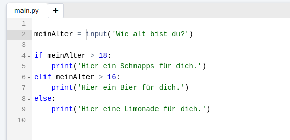

Konsoleninput
Damit Du direkt mit deinem Programm sprechen kannst, gibt es die Möglichkeit innerhalb des Skriptes nach Eingaben zu fragen. Das Signalwort in Python lautet dafür input(). Innerhalb der direkt folgenden runden Klammern kann ein String eingegeben werden, welcher in der Konsole erscheint, damit die Benutzerin weiß, was sie eingeben soll. Wie das funktioniert siehst du hier:
Bei Konsoleneingaben gibt es zwei Dinge zu beachten:
- Der Konsoleninput in einem Skript muss einer Variablen zugewiesen werden, wenn du ihn innerhalb des
Skriptes verwenden möchtest. Setzte die Aufforderung zur Eingabe dabei auf die rechte Seite der
Variablendeklination.
- Der Input wird immer als kompletter String abgespeichert, wenn du also eine Zahl erwartest und auch
als solche weiterverarbeiten möchtest, musst du den Input in ein int umformern.
Mit If-Verzweigungen und Eingaben im Skript kannst du loslegen und deinen eigenen ChatBot schreiben.
Schreibe deinen eigenen ChatBot